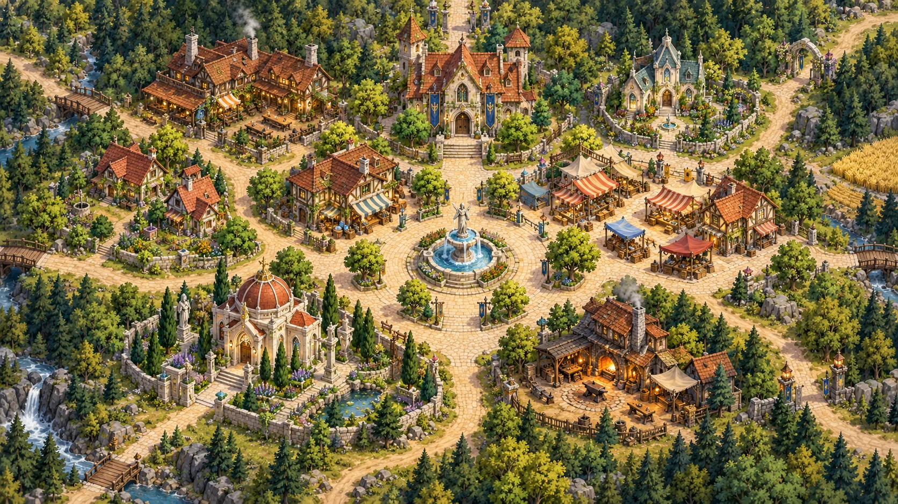

<!doctype html><html lang="th"><meta charset="utf-8"><meta name="viewport" content="width=device-width,initial-scale=1"><title>Project A · Village 2.5D</title><style>@font-face{font-family:VillageThai;src:url(assets/village-town/noto-sans-thai-thai-400-normal.woff2) format('woff2');font-weight:100 900;}@font-face{font-family:VillageThai;src:url(assets/village-town/noto-sans-thai-latin-400-normal.woff2) format('woff2');font-weight:100 900;}
*{box-sizing:border-box}body{margin:0;background:#111c20;color:#eee8d9;font:14px VillageThai,system-ui,Tahoma,sans-serif}button,label.file{font:inherit;color:inherit;background:#26373a;border:1px solid #536260;border-radius:8px;padding:8px 12px;cursor:pointer}button:hover,label.file:hover{background:#3d504b}button.active{background:#90713e;border-color:#d5b77e}header{height:78px;display:flex;align-items:center;justify-content:space-between;padding:12px 24px;border-bottom:1px solid #46514b;background:#172529;gap:15px}h1{font-size:20px;margin:0 0 5px}small,.muted{color:#b0beb3}header small{letter-spacing:2px;font-size:10px}.tag{font-size:11px;border:1px solid #788464;border-radius:20px;padding:5px 10px;color:#d8dcb4}main{display:grid;grid-template-columns:228px 1fr;height:calc(100dvh - 78px)}aside{padding:20px 16px;background:#19292b;border-right:1px solid #405049;overflow:auto}aside h2{font-size:13px;color:#cbb681;font-weight:500;margin:0 0 12px}#places{display:grid;gap:5px}#places button{text-align:left;padding:9px 10px;background:transparent;border-color:transparent;display:flex;align-items:center;gap:10px}#places button:hover,#places button.active{background:#33453d;border-color:#6c795c}#places b{display:grid;place-items:center;border:1px solid #728270;border-radius:5px;width:26px;height:26px;color:#d7c18c;font-size:11px}#places span{font-size:13px}.hint{line-height:1.7;color:#9eafa4;font-size:12px;border-top:1px solid #3e4c45;margin-top:20px;padding-top:16px}.editor{display:grid;gap:8px;margin-top:12px}.editor input{width:100%;background:#132124;border:1px solid #637164;color:white;padding:8px;border-radius:5px}#stage{position:relative;overflow:hidden;background:#293d37;touch-action:none}canvas{width:100%;height:100%;display:block;cursor:crosshair}.toolbar{position:absolute;top:16px;left:18px;right:18px;display:flex;gap:6px;flex-wrap:wrap}.toolbar button{background:#172b2be8;font-size:12px;backdrop-filter:blur(8px)}.toolbar button.active{background:#866d3d}#status{position:absolute;bottom:18px;left:18px;max-width:calc(100% - 36px);background:#152729e8;border:1px solid #65735b;padding:12px 16px;border-radius:10px;pointer-events:none;font-size:13px}#compare{position:absolute;right:18px;top:68px;width:min(460px,70%);background:#152629;border:1px solid #849171;border-radius:12px;overflow:hidden;box-shadow:0 10px 50px #0008}#compare[hidden]{display:none}#compare img{width:100%;display:block}#compare .map{position:relative}#compare .pin{position:absolute;transform:translate(-50%,-50%);border-radius:50%;background:#233d35;color:#ffe2a0;width:21px;height:21px;border:1px solid #ffe2a0;text-align:center;font-size:11px;padding-top:2px}#compare p{margin:10px 14px;font-size:12px;color:#c6d0ba}dialog{background:#1b2e2e;color:#e9e6d7;border:1px solid #9ca77d;border-radius:14px;max-width:420px;padding:26px}dialog::backdrop{background:#0006}dialog h2{margin:0 0 10px;font-size:20px}dialog p{line-height:1.7;color:#bfcbb8}dialog button{width:100%}input[type=file]{display:none}.zoom{margin-left:auto}#editHelp{font-size:12px;color:#dcc58b;line-height:1.6}#credit{position:absolute;right:18px;bottom:20px;color:#e0e7cc77;font-size:10px;pointer-events:none}@media(max-width:760px){main{grid-template-columns:150px 1fr}aside{padding:14px 7px}header{padding:12px;font-size:12px}h1{font-size:16px}.tag{display:none}#places button{padding:7px 4px;gap:6px}#places span{font-size:11px}#credit{display:none}.toolbar{left:8px;right:8px;top:8px;gap:3px}.toolbar button{padding:6px;font-size:10px}#status{left:8px;bottom:8px;font-size:11px}#compare{right:8px;top:90px;width:95%}}

/* Immersive town canvas; controls float above the scene. */
body{overflow:hidden}header{position:fixed;z-index:5;top:20px;left:24px;height:auto;background:none;border:0;padding:0;pointer-events:none;text-shadow:0 2px 10px #10271c}header small{font-size:9px;color:#f7edc6}header h1{font-size:19px;color:#fff0c7}.tag{display:none}main{display:block;height:100dvh}#stage{position:absolute;inset:0;background:#7b8f68}aside{display:none;position:fixed;z-index:9;top:112px;left:24px;width:230px;max-height:calc(100dvh - 140px);border:1px solid #c7c6a04d;border-radius:14px;background:#20382de8;backdrop-filter:blur(16px);box-shadow:0 15px 40px #18362650;padding:16px}aside.open{display:block}.editor{display:none}.hint{font-size:11px;margin-top:10px;padding-top:10px}#places{gap:1px}#places button{padding:6px 4px}#places b{width:23px;height:23px}.toolbar{left:auto;right:22px;top:22px;z-index:6;gap:7px}.toolbar button,.floatBtn{background:#213b2de8;border-color:#cbd2ac70;box-shadow:0 3px 14px #18362640;backdrop-filter:blur(12px)}#menuBtn{position:fixed;left:24px;top:74px;z-index:10;font-size:12px}.toolsPanel{position:fixed;z-index:10;right:22px;top:70px;width:220px;padding:14px;display:grid;gap:8px;background:#20382df2;border:1px solid #c7c6a04d;border-radius:12px;backdrop-filter:blur(16px)}.toolsPanel[hidden]{display:none}.toolsPanel button,.toolsPanel label{font-size:12px}.toolsPanel h3{font-size:12px;color:#e3d3a8;margin:0 0 4px}#compare{z-index:8;top:72px;width:min(440px,75%)}#status{left:24px;bottom:24px;font-size:12px;padding:10px 14px;border-color:#d1d5a250;background:#213b2de0}#credit{right:24px;bottom:24px;font-size:10px;color:#fcf4d3b0;text-shadow:0 1px 5px #1b3128}#help{position:fixed;bottom:65px;left:24px;pointer-events:none;font-size:11px;color:#f4edce;text-shadow:0 1px 4px #1a3326}#connection{font-size:11px;color:#d9e3bf;line-height:1.5}#connection.warning{color:#ffc29b}#editHelp{font-size:11px}.toolsPanel label.file{padding:8px 12px}#grid,#routes{display:none}#labels{font-size:12px}
@media(max-width:760px){header{left:14px;top:14px}header h1{font-size:16px}header small{font-size:8px}#menuBtn{left:14px;top:61px}.toolbar{right:12px;top:14px;max-width:48%;justify-content:flex-end}.toolbar button{font-size:10px;padding:7px}aside{left:14px;top:101px;width:215px;max-height:calc(100dvh - 125px)}#status{left:14px;bottom:14px;max-width:calc(100% - 28px)}#help{left:14px;bottom:55px;font-size:10px}#credit{display:none}.toolsPanel{right:12px;top:60px}#compare{right:12px;top:95px;width:85%}}
</style><header><div><small>PROJECT A / VILLAGE</small><h1>หมู่บ้านริมป่า</h1></div><span class="tag">ฉากทดลอง · อ้างอิงผังเดิม</span></header><button id="menuBtn" class="floatBtn" aria-expanded="false">☰ สถานที่</button><main><aside id="locationMenu"><h2>สถานที่ในหมู่บ้าน</h2><div id="places"></div><div class="hint">คลิกถนนเพื่อเดิน<br>ลากพื้นเพื่อเลื่อนกล้อง<br>หมุนล้อเพื่อซูม<br>คลิกสถานที่เพื่อเดินไปทางเข้า</div></aside><section id="stage"><canvas id="world" aria-label="ฉากหมู่บ้าน 2.5D คลิกเพื่อเดิน"></canvas><div class="toolbar"><button data-game="bag">กระเป๋า</button><button data-game="character">ตัวละคร</button><button data-game="upgrade">อัปไพ่</button><button data-game="adventure">ผจญภัย</button><button data-game="settings">ตั้งค่า</button><button id="activities">กิจกรรม</button><button id="compareBtn">ผังเดิม</button><button id="fit">ดูทั้งเมือง</button><button id="fullscreen">เต็มจอ</button><button id="toolsBtn" aria-expanded="false">⚙ เครื่องมือ</button></div><div class="toolsPanel" id="toolsPanel" hidden><h3>เครื่องมือจัดฉาก</h3><button id="labels">แสดงชื่อทุกสถานที่</button><button id="edit">จัดตำแหน่ง</button><div id="editHelp" hidden>ลากหมุดสีทองเพื่อย้ายอาคาร หรือเลือกสถานที่แล้วสลับหน้า SE/SW ถนนจะเชื่อมตามประตูใหม่</div><button id="facing">สลับหน้าอาคาร SE / SW</button><button id="export">ส่งออกพิกัด</button><label class="file">นำเข้าพิกัด<input type="file" id="import" accept=".json,application/json"></label><button id="reset">คืนผังต้นฉบับ</button><div id="connection"></div><button id="grid">พื้นที่เดิน</button><button id="routes">เส้นทาง</button></div><div id="compare" hidden><div class="map"><div id="pins"></div></div><p>หมายเลขตรงกับรายการซ้าย • ตำแหน่งอ้างอิงจากแผนที่เดิม</p></div><div id="status" role="status">เลือกสถานที่ หรือคลิกพื้นเพื่อลองเดิน</div><span id="credit"></span><div id="help">คลิกถนนเพื่อเดิน · ลากเพื่อเลื่อนกล้อง · หมุนล้อเพื่อซูม</div></section></main><dialog id="arrival"><h2></h2><p>กำลังตรวจสถานที่…</p><div id="placeActions"></div><button onclick="this.closest('dialog').close()">เดินต่อ</button></dialog><script src="js/asset-manifest.js"></script><script src="js/tactics-sprites.js"></script><script src="js/hero-motion.js"></script><script src="js/village-alpha-masks.js"></script><script src="js/town-art.js?v=57"></script><script>
'use strict';
const WORLD_W=4480,WORLD_H=2520,MX=44.8,MY=25.2;
const HOUSE='assets/village-town/player-house.png';const BUILDINGS={"inn": "assets/village-town/inn.png", "guild": "assets/village-town/guild.png", "healer": "assets/village-town/healer.png", "shop": "assets/village-town/shop.png", "market": "assets/village-town/market.png", "temple": "assets/village-town/temple.png", "forge": "assets/village-town/forge.png"};let hovered=null;
const base=[['home','บ้านของเรา',19,44,1.7,1.7,68,'#a75939'],['inn','โรงแรม',27,25,2.7,2.1,100,'#ac5735'],['guild','สมาคมนักผจญภัย',51,27,2.7,2.4,114,'#944937'],['healer','สถานพยาบาล',74,25,1.8,1.8,85,'#4d7b78'],['shop','ร้านของทั่วไป',38.66980433689421,41.723889857384414,2,1.8,80,'#aa6039'],['market','ตลาด',76,48,2.1,1.9,62,'#b65d45'],['temple','วิหาร',29,73,2.4,2.1,85,'#b68d58'],['forge','โรงตีเหล็ก',70,79,2.5,2.2,72,'#69625a'],['square','ลานน้ำพุ',52,55,1.7,1.7,35,'#82b6b5'],
 ['npc0','บ้านป้าเมย์ คนทำขนมปัง',10,74,1.3,1.3,60,'#a75939'],['npc1','บ้านลุงทอม ช่างไม้',67,60,1.3,1.3,60,'#a75939'],['npc2','บ้านคุณยายลิน',86,36,1.3,1.3,60,'#a75939'],['npc3','บ้านพี่น้องคนตัดไม้',88,66,1.3,1.3,60,'#a75939'],['npc4','บ้านนายพรานเบิร์ก',58,70,1.3,1.3,60,'#a75939'],
 ['npc5','บ้านคุณครูมิรา',43,63,1.3,1.3,60,'#a75939'],['npc6','บ้านชาวประมงโจ',13,60,1.3,1.3,60,'#a75939'],['npc7','บ้านคนเลี้ยงแกะ',43,86,1.3,1.3,60,'#a75939'],['npc8','บ้านช่างทอผ้าเอลลา',12,29,1.3,1.3,60,'#a75939'],['npc9','บ้านหมอยาสมุนไพร',63,13,1.3,1.3,60,'#a75939']];
const exits=[['ทางเหนือ',51,5],['ทางตะวันออกเฉียงเหนือ',92,10],['ทางตะวันออก',94,52],['ทางตะวันออกเฉียงใต้',92,87],['ทางตะวันตกเฉียงใต้',16,94],['ทางตะวันตก',6,17]];
const $=id=>document.getElementById(id),cv=$('world'),stage=$('stage'),KEY='project-a-village-main-v1';let g=cv.getContext('2d'),terrainDirty=true;const terrain=document.createElement('canvas');terrain.width=WORLD_W;terrain.height=WORLD_H;window.__townTerrain=terrain;
let locations=base.map((a,i)=>({id:a[0],name:a[1],x:a[2],y:a[3],w:a[4]*2,d:a[5]*2,h:a[6]*2,roof:a[7],num:i+1,npc:a[0].startsWith('npc'),desc:a[0].startsWith('npc')?'บ้านชาวบ้าน · ทักทายได้เร็ว ๆ นี้':undefined,facing:['home','inn','shop','temple'].includes(a[0])||/npc[13579]/.test(a[0])?'SE':'SW'}));
try{const saved=JSON.parse(localStorage.getItem(KEY)||'{}');for(const o of locations)if(saved[o.id]&&valid(saved[o.id]))Object.assign(o,saved[o.id])}catch(e){}
let W,H,scale=1,pan={x:0,y:0},zoom=1,editing=false,showRoutes=false,showGrid=false,showLabels=false,selected=null,path=[],destination=null,notice='',time=0,last=0;
const images={};TownArt.onLoad(()=>terrainDirty=true);
for(const [key,file]of Object.entries({grass:'grass.png',paving:'paving.png',soil:'soil.png',details:'meadow-details.png',pond:'garden-pond.png'})){images[key]=new Image();images[key].onload=()=>terrainDirty=true;images[key].src='assets/village-town/'+file}images.house=new Image();images.house.src=HOUSE;for(const [id,src]of Object.entries(BUILDINGS)){images['building_'+id]=new Image();images['building_'+id].src=src;}
const hero={...inv(19*MX,44*MY),dir:'SE',dir8:'SE'};
function valid(p){return p&&Number.isFinite(p.x)&&Number.isFinite(p.y)&&p.x>=2&&p.x<=98&&p.y>=2&&p.y<=98&&(!p.facing||['SE','SW'].includes(p.facing))}
function project(u,v,z=0){return{x:2240+(u-v)*28,y:1232+(u+v)*14-z}}
function inv(x,y){return{u:((x-2240)/28+(y-1232)/14)/2,v:((y-1232)/14-(x-2240)/28)/2}}
function center(o){return inv(o.x*MX,o.y*MY-(o.w+o.d)*14)}
// Local front always points +v in the canonical SW view. Swapping local axes
// mirrors the whole estate into the SE view, including paths and collision.
function canonical(o,u,v){const a=center(o);return o.facing==='SE'?{u:a.u+v-a.v,v:a.v+u-a.u}:{u,v}}
function reflectView(o,draw){g.save();if(o.facing==='SE'){const a=center(o),p=project(a.u,a.v);g.translate(p.x*2,0);g.scale(-1,1)}draw();g.restore()}
function door(o){const a=center(o);if(o.id==='square')return{u:a.u+o.w+2,v:a.v+o.d+2};return canonical(o,a.u,a.v+o.d+(o.id==='market'||o.id==='shop'?6:2))}
function poly(pts,col,stroke='#25372b50',width=1){g.beginPath();pts.forEach((p,i)=>g[i?'lineTo':'moveTo'](p.x,p.y));g.closePath();g.fillStyle=col;g.fill();if(stroke){g.strokeStyle=stroke;g.lineWidth=width;g.stroke()}}
function ellipse(x,y,rx,ry,c){g.fillStyle=c;g.beginPath();g.ellipse(x,y,rx,ry,0,0,Math.PI*2);g.fill()}
function line(a,b,c,w=1){g.strokeStyle=c;g.lineWidth=w;g.beginPath();g.moveTo(a.x,a.y);g.lineTo(b.x,b.y);g.stroke()}
// v59: NPC cottages reuse the house art with a subtle roof tone per household
const HOUSE_TONES=[[0,1],[14,.9],[-10,.85],[200,.32],[24,.8],[0,.75],[188,.28],[-16,.9],[32,.7],[205,.3]],houseVariants={};
function houseImage(o){if(!o.npc)return images.house;const i=+o.id.slice(3)||0;if(houseVariants[i])return houseVariants[i];const src=images.house;if(!src.complete||!src.naturalWidth)return src;
 const c=document.createElement('canvas');c.width=src.naturalWidth;c.height=src.naturalHeight;const q=c.getContext('2d');q.drawImage(src,0,0);const [hue,sat]=HOUSE_TONES[i%HOUSE_TONES.length];
 if(hue||sat!==1){const d=q.getImageData(0,0,c.width,c.height),a=d.data;for(let k=0;k<a.length;k+=4){const r=a[k],gg=a[k+1],b=a[k+2];if(!a[k+3]||r<gg+30||r<b+40)continue;const mx=Math.max(r,gg,b)/255,mn=Math.min(r,gg,b)/255,l=(mx+mn)/2,dd=mx-mn;if(!dd)continue;let h=mx===r/255?((gg-b)/255/dd+6)%6:mx===gg/255?(b-r)/255/dd+2:(r-gg)/255/dd+4;h=(h/6+hue/360+1)%1;const sv=dd/(1-Math.abs(2*l-1))*sat,C=(1-Math.abs(2*l-1))*sv,X=C*(1-Math.abs(h*6%2-1)),m=l-C/2,[R,G,B]=h<1/6?[C,X,0]:h<2/6?[X,C,0]:h<3/6?[0,C,X]:h<4/6?[0,X,C]:h<5/6?[X,0,C]:[C,0,X];a[k]=(R+m)*255;a[k+1]=(G+m)*255;a[k+2]=(B+m)*255}q.putImageData(d,0,0)}
 const im=new Image();im.onload=()=>terrainDirty=true;im.src=c.toDataURL('image/png');houseVariants[i]=im;return im}
function homeSpriteRect(o){const a=center(o),front=project(a.u,a.v+o.d),width=o.npc?430:560,height=width*1199/1312;return{x:front.x-width*.375,y:front.y-height*.82,w:width,h:height}}
const artSpecs={inn:[390,.31,.85],guild:[500,.40,.92],healer:[420,.43,.90],shop:[360,.29,.84],market:[370,.29,.88],temple:[330,.31,.91],forge:[400,.34,.84]};
function artRect(o){const spec=artSpecs[o.id],im=images['building_'+o.id];if(!spec||!im?.naturalWidth)return null;const a=center(o),front=project(a.u,a.v+o.d),width=spec[0]*2,height=width*im.naturalHeight/im.naturalWidth;return{x:front.x-width*spec[1],y:front.y-height*spec[2],w:width,h:height,im}}

function estate(o){if(o.id==='square')return null;const a=center(o),extra=o.npc?.8:{home:1.6,inn:2.0,guild:2.4,healer:2.0,shop:1.6,market:2.2,temple:2.2,forge:2.2}[o.id];return{...a,left:-o.w-extra*1.3,right:o.w+extra*1.3,back:-o.d-(o.npc?1.6:2.2),front:o.d+(o.npc?3.4:['market','shop'].includes(o.id)?6.4:5)}}
function gate(o){const e=estate(o);return e?canonical(o,e.u,e.v+e.front+1.3):door(o)}
function plotPoints(o){const e=estate(o);return[[e.left,e.back],[e.right,e.back],[e.right,e.front],[e.left,e.front]].map(([u,v])=>project(e.u+u,e.v+v))}
function fenceBlocked(u,v){return locations.some(o=>{const e=estate(o);if(!e)return false;const q=canonical(o,u,v),a=q.u-e.u,b=q.v-e.v;if(a<e.left-.22||a>e.right+.22||b<e.back-.22||b>e.front+.22)return false;return Math.abs(a-e.left)<.22||Math.abs(a-e.right)<.22||Math.abs(b-e.back)<.22||(Math.abs(b-e.front)<.22&&Math.abs(a)>2.7)})}
function blockedRoad(u,v){if(blockedBase(u,v))return true;return locations.some(o=>{const e=estate(o),q=canonical(o,u,v);return e&&q.u>e.u+e.left-.4&&q.u<e.u+e.right+.4&&q.v>e.v+e.back-.4&&q.v<e.v+e.front+.3})}
function courtPath(o){const p=courtPathSW(o);if(o.facing!=='SE')return p;const a=center(o),c=project(a.u,a.v),out=new Path2D();out.addPath(p,new DOMMatrix([-1,0,0,1,c.x*2,0]));return out}
function courtPathSW(o){const e=estate(o),p=new Path2D();if(!e)return p;const min=o.id==='market'||o.id==='shop'?o.d+4.2:o.d+1.3;const half=o.id==='home'?2.2:o.w+1.3;const pts=[[-half,min],[half,min],[half,e.front+1.8],[-half,e.front+1.8]].map(([u,v])=>project(e.u+u,e.v+v));p.moveTo(pts[0].x,pts[0].y*2);for(const q of pts.slice(1))p.lineTo(q.x,q.y*2);p.closePath();return p}
function estateGround(){for(const o of locations){const e=estate(o);if(!e)continue;reflectView(o,()=>{poly(plotPoints(o),TownArt.pattern(g,'soil')||'#6f8b5b',null);const pts=[[e.left+.35,e.back+.35],[e.right-.35,e.back+.35],[e.right-.35,e.front-.35],[e.left+.35,e.front-.35]].map(([u,v])=>project(e.u+u,e.v+v));poly(pts,TownArt.pattern(g,o.id==='forge'?'soil':'grass')||'#789366',null);
 g.save();g.scale(1,.5);g.fillStyle=TownArt.pattern(g,'paving')||'#c9bca0';g.fill(courtPathSW(o));g.restore();
 if(o.id==='temple'){const p=project(e.u+e.left+1.1,e.v+.1);TownArt.sprite(g,'pond',p,130,90,[.5,.65])}
 if(o.id==='healer')for(let j=0;j<3;j++)TownArt.detail(g,3,project(e.u+e.right-1.1,e.v-1.2+j*.8),52);
 // Little soil beds under hedges, leaving the front approach open.
 for(const side of [-1,1]){const u=side<0?e.left+.65:e.right-.65;poly([project(e.u+u-.4,e.v+e.back+.7),project(e.u+u+.4,e.v+e.back+.7),project(e.u+u+.4,e.v+e.front-.8),project(e.u+u-.4,e.v+e.front-.8)],TownArt.pattern(g,'soil')||'#5f6847',null)}
});}}
let roadLines=[],roadKinds=[],roadMain=new Path2D(),roadLane=new Path2D(),junctionPath=null,roadPath=new Path2D(),roadPixels=null;const roadMask=document.createElement('canvas');roadMask.width=WORLD_W;roadMask.height=WORLD_H;
images.props=new Image();images.props.src='assets/village-town/props.png';images.fountain=new Image();images.fountain.src='assets/village-town/fountain.png';
function propSprite(index,p,w=90,h=w,flip=false){const im=images.props;if(!im.complete||!im.naturalWidth)return;const sw=im.naturalWidth/4,sh=im.naturalHeight/2;g.save();g.translate(p.x,p.y);if(flip)g.scale(-1,1);TownArt.draw(g,im,[(index%4)*sw,Math.floor(index/4)*sh,sw,sh],[-w/2,-h*.92,w,h],project(hero.u,hero.v));g.restore()}
function tree(t){const p=project(t.u,t.v),h=t.h*3;propSprite(7,p,h*.85,h)}
function bush(u,v,flower=false){propSprite(2,project(u,v),85,85)}
// v60: estate borders mix hedges, flower beds and planters (FFT/cozy-village look); real fences only on some fronts
// optional generated decor: dropped into assets/village-town/decor/<name>.png it shows up automatically
const DECOR=['bench','market-stall-red','market-stall-blue','banner-pole','woodpile','signpost','well','cart','hay','flower-box'],decorImg={};
for(const n of DECOR){const im=new Image();im.onload=()=>{decorImg[n]=im;terrainDirty=true};im.src='assets/village-town/decor/'+n+'.png'}
function decor(name,p,w,flip){const im=decorImg[name];if(!im)return;const h=w*im.naturalHeight/im.naturalWidth;g.save();g.translate(p.x,p.y);if(flip)g.scale(-1,1);g.fillStyle='#00000028';g.beginPath();g.ellipse(0,0,w*.38,w*.12,0,0,Math.PI*2);g.fill();TownArt.draw(g,im,null,[-w/2,-h*.92,w,h],project(hero.u,hero.v));g.restore()}
function hashN(id,k){let h=2166136261;for(const c of id+':'+k)h=Math.imul(h^c.charCodeAt(0),16777619);return (h>>>0)/4294967296}
function borderStyle(o,si,k,n,front){const r=hashN(o.id,si*31+k);
 if(front){if(['guild','temple','healer'].includes(o.id))return 'stone';if(['home','forge'].includes(o.id)||o.npc&&r<.3)return r<.65?'wood':'planter';return r<.5?'flowers':r<.8?'hedge':'planter'}
 return r<.55?'hedge':r<.82?'flowers':r<.9?'gap':'hedge'}
function drawBorder(a,b,style,r){if(style==='gap')return;if(style==='wood'||style==='stone'){drawFence(a,b,style);return}
 const at=q=>project(a.u+(b.u-a.u)*q,a.v+(b.v-a.v)*q);
 if(style==='hedge'){for(const q of[.22,.72]){const p=at(q),s=74+((r*997+q*13)%1)*22;propSprite(2,{x:p.x,y:p.y+8},s,s*.92)}return}
 if(style==='planter'){const p=at(.5);propSprite(3,{x:p.x,y:p.y+6},74,90);return}
 for(const q of[.18,.5,.82]){const p=at(q);TownArt.detail(g,1+Math.floor(((r*7+q*3)%1)*2),{x:p.x,y:p.y+12},58)}}
// slim iron street lamp drawn in code (warm glass, soft glow)
function lamp(p){const h=118,t=performance.now(),fl=.85+.15*Math.sin(t*.004+p.x);g.fillStyle='#00000035';g.beginPath();g.ellipse(p.x,p.y,13,5.5,0,0,Math.PI*2);g.fill();
 g.fillStyle='#2b2a28';g.fillRect(p.x-7,p.y-10,14,10);g.fillRect(p.x-3,p.y-h,6,h);g.fillRect(p.x-6,p.y-h-2,12,5);
 const top=p.y-h-30;g.fillStyle='#2b2a28';g.beginPath();g.moveTo(p.x-12,top+6);g.lineTo(p.x,top-6);g.lineTo(p.x+12,top+6);g.closePath();g.fill();
 g.fillStyle=`rgba(255,${200*fl|0},110,${fl})`;g.fillRect(p.x-9,top+6,18,22);g.strokeStyle='#2b2a28';g.lineWidth=2.5;g.strokeRect(p.x-9,top+6,18,22);g.beginPath();g.moveTo(p.x,top+6);g.lineTo(p.x,top+28);g.stroke();
 const gl=g.createRadialGradient(p.x,top+17,0,p.x,top+17,46);gl.addColorStop(0,`rgba(255,210,120,${.35*fl})`);gl.addColorStop(1,'rgba(255,210,120,0)');g.fillStyle=gl;g.beginPath();g.arc(p.x,top+17,46,0,Math.PI*2);g.fill()}
function drawFence(a,b,style){const length=Math.hypot(b.u-a.u,b.v-a.v),n=Math.max(1,Math.ceil(length/2));for(let i=0;i<n;i++){const q=(i+.5)/n,p=project(a.u+(b.u-a.u)*q,a.v+(b.v-a.v)*q),A=project(a.u,a.v),B=project(b.u,b.v);propSprite(style==='wood'?1:0,{x:p.x,y:p.y+10},100,100,(B.x-A.x)*(B.y-A.y)<0)}}
function estateObjects(){const out=[];for(const o of locations){const e=estate(o);if(!e)continue;const first=out.length,P=(u,v)=>({u:e.u+u,v:e.v+v}),segments=[[P(e.left,e.back),P(e.right,e.back)],[P(e.left,e.back),P(e.left,e.front)],[P(e.right,e.back),P(e.right,e.front)],[P(e.left,e.front),P(-2.8,e.front)],[P(2.8,e.front),P(e.right,e.front)]];segments.forEach(([a,b],si)=>{const n=Math.ceil(Math.hypot(a.u-b.u,a.v-b.v)/2),front=si>=3;for(let k=0;k<n;k++){const A={u:a.u+(b.u-a.u)*k/n,v:a.v+(b.v-a.v)*k/n},B={u:a.u+(b.u-a.u)*(k+1)/n,v:a.v+(b.v-a.v)*(k+1)/n},style=borderStyle(o,si,k,n,front);if(style)out.push({y:(project(A.u,A.v).y+project(B.u,B.v).y)/2,draw:()=>drawBorder(A,B,style,hashN(o.id,si*31+k))})}});
 // one lamp at the gate of the big places only
 if(!o.npc&&o.id!=='home'){const q=P(3.4,e.front+.4),pp=project(q.u,q.v);out.push({y:pp.y,draw:()=>lamp(pp)})}
 for(const side of[-1,1]){const u=e.u+(side<0?e.left+1.4:e.right-1.4);for(let v=e.v+e.back+1.6;v<e.v+e.front-1;v+=2.1)out.push({y:project(u,v).y,draw:()=>bush(u,v,true)});const p=project(e.u+side*3.3,e.v+e.front-.3);out.push({y:p.y,draw:()=>propSprite(3,p,90)})}
 if(['temple','guild','healer'].includes(o.id))for(const side of[-1,1]){const p=project(e.u+side*(o.w+1.2),e.v+o.d+3.4);out.push({y:p.y,draw:()=>propSprite(4,p,100,125)})}
 if(o.id==='inn')for(let i=0;i<2;i++){const p=project(e.u+o.w+1.8,e.v+o.d+2.4+i*2);out.push({y:p.y,draw:()=>propSprite(5,p,145,110)})}
 if(o.id==='forge')for(let i=0;i<3;i++){const p=project(e.u+o.w+2,e.v-1.4+i*2);out.push({y:p.y,draw:()=>propSprite(6,p,110)})}
 // v61 district clusters: each building type gets its own little scene (3–8 props), using the art we have now
 // plus optional generated decor (assets/village-town/decor/*.png) that appears as soon as the file exists
 {const put=(du,dv,fn)=>{const q=P(du,dv),pp=project(q.u,q.v);out.push({y:pp.y,draw:()=>fn(pp)})},R=k=>hashN(o.id,900+k),F=e.front-.6,S=o.w+.9;
  const herb=(du,dv)=>put(du,dv,pp=>TownArt.detail(g,3,{x:pp.x,y:pp.y+10},62)),flw=(du,dv,i=1)=>put(du,dv,pp=>TownArt.detail(g,i,{x:pp.x,y:pp.y+10},56)),crate=(du,dv)=>put(du,dv,pp=>propSprite(6,pp,92)),bush=(du,dv)=>put(du,dv,pp=>propSprite(2,{x:pp.x,y:pp.y+6},78,72)),pot=(du,dv)=>put(du,dv,pp=>propSprite(3,{x:pp.x,y:pp.y+6},64,78)),dec=(name,du,dv,w,flip)=>put(du,dv,pp=>decor(name,pp,w,flip));
  if(o.id==='market'){crate(-S,F-1.5);crate(S,F-2.6);pot(-2.2,F);pot(2.2,F);dec('market-stall-red',-S-.6,1.2,230);dec('market-stall-blue',S+.6,1.6,230,true);dec('cart',S+.4,F-.6,150);dec('banner-pole',-1.6,F+.2,70);dec('banner-pole',1.6,F+.2,70,true)}
  else if(o.id==='inn'){crate(S,-.6);flw(-S,F-1.2,2);bush(-S,F-.2);dec('woodpile',S+.2,1.6,120);dec('signpost',2.6,F+.3,70)}
  else if(o.id==='home'){herb(-S,F-2);herb(-S+1,F-1.2);herb(-S,F-.6);crate(S,F-1.4);flw(S-.4,F-.4,1);dec('flower-box',-1.4,F-.2,90);dec('woodpile',S+.3,-.2,110)}
  else if(o.id==='healer'){herb(-S,F-2.2);herb(-S,F-1);herb(S,F-2.2);herb(S,F-1);pot(-2,F);pot(2,F)}
  else if(o.id==='guild'||o.id==='temple'){flw(-S,F-1,2);flw(S,F-1,1);pot(-2.6,F);pot(2.6,F);if(o.id==='guild'){dec('banner-pole',-3.4,F+.3,80);dec('banner-pole',3.4,F+.3,80,true)}}
  else if(o.id==='forge'){crate(-S,F-1.2);dec('woodpile',-S-.2,.4,130);dec('cart',S+.6,F-.4,150,true);dec('hay',-S+.4,F-.2,90)}
  else if(o.id==='shop'){crate(S,F-1);pot(-1.8,F);dec('flower-box',1.4,F-.2,80)}
  else if(o.npc){const k=+o.id.slice(3);if(R(1)<.6)herb(-S,F-1.2);if(R(2)<.5)crate(S,F-1);if(R(3)<.7)flw(S-.3,F-.4,1+Math.floor(R(4)*2));if(R(5)<.5)bush(-S,F-.2);dec(R(6)<.5?'flower-box':'woodpile',R(7)<.5?-1.2:1.2,F-.2,90,R(8)<.5);if(k===7){dec('hay',S+.3,-.2,100);dec('hay',S+.4,1.2,90,true)}if(k===6||k===9)dec('well',-S-.4,F-1.6,120)}}
 if(o.facing==='SE')for(let i=first;i<out.length;i++){const draw=out[i].draw;out[i].draw=()=>reflectView(o,draw)}
 }
 // plaza: lamps on the corners, planters between them
 const sq=locations.find(o=>o.id==='square');if(sq){const c=center(sq),R=6.6;for(const[du,dv]of[[-R,-R],[R,-R],[R,R],[-R,R]]){const pp=project(c.u+du,c.v+dv);out.push({y:pp.y,draw:()=>lamp(pp)})}for(const[du,dv]of[[0,-R],[R,0],[0,R],[-R,0]]){const pp=project(c.u+du,c.v+dv);out.push({y:pp.y,draw:()=>propSprite(3,{x:pp.x,y:pp.y+6},70,86)})}
 for(const[du,dv,f]of[[-3.6,-R+.6,0],[3.6,-R+.6,1],[R-.6,3.6,0],[-R+.6,3.6,1]]){const pp=project(c.u+du,c.v+dv);out.push({y:pp.y,draw:()=>decor('bench',pp,110,f)})}}
 return out}
function building(o){reflectView(o,()=>{if(o.id==='square'){const a=center(o),p=project(a.u,a.v),im=images.fountain,w=400,h=w*im.naturalHeight/im.naturalWidth;if(im.complete&&im.naturalWidth)TownArt.draw(g,im,null,[p.x-w*.5,p.y-h*.67,w,h],project(hero.u,hero.v));return}if(o.id==='home'||o.npc){const im=houseImage(o);if(im.complete&&im.naturalWidth){const r=homeSpriteRect(o);TownArt.draw(g,im,null,[r.x,r.y,r.w,r.h],project(hero.u,hero.v))}return}const art=artRect(o);if(art)TownArt.draw(g,art.im,null,[art.x,art.y,art.w,art.h],project(hero.u,hero.v))})}

let solidCache=[];
function cacheSolids(){solidCache=locations.map(o=>{const a=center(o),e=estate(o);return{id:o.id,u:a.u,v:a.v,w:o.w,d:o.d,se:o.facing==='SE',e,extra:o.id==='market'||o.id==='shop'?3.9:.9}})}
function blockedBase(u,v){const x=2240+(u-v)*28,y=1232+(u+v)*14;if(x<12||x>WORLD_W-12||y<26||y>WORLD_H-26)return true;for(const o of solidCache){let a=u-o.u,b=v-o.v;if(o.se){const t=a;a=b;b=t}if(o.id==='square'){if(Math.hypot((a-b)*28,(a+b)*28)<144)return true;continue}const e=o.e;if(a>=e.left-.22&&a<=e.right+.22&&b>=e.back-.22&&b<=e.front+.22&&(Math.abs(a-e.left)<.22||Math.abs(a-e.right)<.22||Math.abs(b-e.back)<.22||(Math.abs(b-e.front)<.22&&Math.abs(a)>2.7)))return true;if(Math.abs(a)<o.w+.9&&b>-o.d-.9&&b<o.d+o.extra)return true}return false}
function blockedRoad(u,v){if(blockedBase(u,v))return true;for(const o of solidCache){if(!o.e)continue;let a=u-o.u,b=v-o.v;if(o.se){const t=a;a=b;b=t}const e=o.e;if(a>e.left-.4&&a<e.right+.4&&b>e.back-.4&&b<e.front+.3)return true}return false}

function roadAt(u,v){if(!roadPixels)return false;const p=project(u,v),x=Math.round(p.x),y=Math.round(p.y);return x>=0&&x<WORLD_W&&y>=0&&y<WORLD_H&&roadPixels[(y*WORLD_W+x)*4+3]>230}
function blocked(u,v){return blockedBase(u,v)||!roadAt(u,v)}
const key=p=>Math.round(p.u*2)+','+Math.round(p.v*2);
function nearestUsing(p,test,max=5){const u=Math.round(p.u*2)/2,v=Math.round(p.v*2)/2;if(!test(u,v))return{u,v};for(let r=1;r<=max*2;r++){let best=null,dist=Infinity;for(let a=-r;a<=r;a++)for(let b=-r;b<=r;b++){if(Math.max(Math.abs(a),Math.abs(b))!==r)continue;const q={u:u+a*.5,v:v+b*.5},d=Math.hypot(q.u-p.u,q.v-p.v);if(d<dist&&!test(q.u,q.v)){best=q;dist=d}}if(best)return best}return null}
function nearest(p){return nearestUsing(p,blocked,9)}
function clearSegment(a,b,test){const n=Math.max(1,Math.ceil(Math.hypot(b.u-a.u,b.v-a.v)*48));for(let i=0;i<=n;i++){const f=i/n;if(test(a.u+(b.u-a.u)*f,a.v+(b.v-a.v)*f))return false}return true}
function route(start,end,test=blocked){start=nearestUsing(start,test,3);end=nearestUsing(end,test,3);if(!start||!end)return[];const open=[],cost=new Map(),prev=new Map();const heuristic=p=>Math.hypot(p.u-end.u,p.v-end.v);function push(n){open.push(n);let i=open.length-1;while(i>0){const j=(i-1)>>1;if(open[j].f<=n.f)break;open[i]=open[j];i=j}open[i]=n}function pop(){const n=open[0],last=open.pop();if(open.length){let i=0;while(i*2+1<open.length){let j=i*2+1;if(j+1<open.length&&open[j+1].f<open[j].f)j++;if(open[j].f>=last.f)break;open[i]=open[j];i=j}open[i]=last}return n}
 cost.set(key(start),0);push({...start,g:0,f:heuristic(start)});let found=null,iterations=0;
 while(open.length&&iterations++<160000){const a=pop(),ak=key(a);if(a.g>cost.get(ak))continue;if(ak===key(end)){found=a;break}for(const [du,dv]of [[.5,0],[-.5,0],[0,.5],[0,-.5],[.5,.5],[.5,-.5],[-.5,.5],[-.5,-.5]]){const b={u:a.u+du,v:a.v+dv},bk=key(b);if(test(b.u,b.v)||!clearSegment(a,b,test))continue;const nc=a.g+Math.hypot(du,dv);if(nc>=(cost.get(bk)??Infinity))continue;cost.set(bk,nc);prev.set(bk,a);push({...b,g:nc,f:nc+heuristic(b)})}}
 if(!found)return[];const out=[{u:found.u,v:found.v}];while(key(found)!==key(start)){found=prev.get(key(found));out.push({u:found.u,v:found.v})}return out.reverse()}
// v50 · grid roads — every road runs along the tile axes (u/v = the screen diagonals) and turns only at tile
// centres, so the hero walks a road in straight lines. Walking uses the same tiles; facing is resolved in 8 directions.
const cellKey=(u,v)=>u+','+v;let roadCells=new Map();
function snapCell(p,test=blockedRoad,max=4){const u0=Math.round(p.u),v0=Math.round(p.v);for(let r=0;r<=max;r++){let best=null,bd=Infinity;for(let a=-r;a<=r;a++)for(let b=-r;b<=r;b++){if(Math.max(Math.abs(a),Math.abs(b))!==r)continue;const u=u0+a,v=v0+b;if(test(u,v))continue;const d=Math.hypot(u-p.u,v-p.v);if(d<bd){bd=d;best={u,v}}}if(best)return best}return null}
const GRID_DIRS=[[1,0],[0,1],[-1,0],[0,-1]];
// Shortest tile route in 4 directions with a turn penalty (straight roads). goal=null → stop at any tile of `network`
// (existing roads are cheaper, so new roads merge into them instead of running beside them).
function gridRoute(start,goal,test=blockedRoad,network=null,turn=3){if(!start)return[];const net=network||new Map();if(!goal&&net.has(cellKey(start.u,start.v)))return[{u:start.u,v:start.v}];
 const h=goal?(u,v)=>Math.abs(u-goal.u)+Math.abs(v-goal.v):()=>0,sk=(u,v,d)=>u+','+v+','+d,open=[],best=new Map(),prev=new Map();
 const push=n=>{open.push(n);let i=open.length-1;while(i>0){const j=(i-1)>>1;if(open[j].f<=n.f)break;open[i]=open[j];i=j}open[i]=n};
 const pop=()=>{const n=open[0],last=open.pop();if(open.length){let i=0;while(i*2+1<open.length){let j=i*2+1;if(j+1<open.length&&open[j+1].f<open[j].f)j++;if(open[j].f>=last.f)break;open[i]=open[j];i=j}open[i]=last}return n};
 const s0=sk(start.u,start.v,-1);best.set(s0,0);push({u:start.u,v:start.v,d:-1,g:0,f:h(start.u,start.v),k:s0});let found=null,it=0;
 while(open.length&&it++<250000){const n=pop();if(n.g>best.get(n.k))continue;if(goal?n.u===goal.u&&n.v===goal.v:n.d>=0&&net.has(cellKey(n.u,n.v))){found=n;break}
  for(let d=0;d<4;d++){if(n.d>=0&&d===(n.d+2)%4)continue;const[du,dv]=GRID_DIRS[d],u=n.u+du,v=n.v+dv;if(test(u,v)||test(n.u+du/2,n.v+dv/2))continue;const k=sk(u,v,d),g=n.g+(net.has(cellKey(u,v))?.35:1)+(n.d>=0&&n.d!==d?turn:0);if(g>=(best.get(k)??Infinity))continue;best.set(k,g);prev.set(k,n);push({u,v,d,g,f:g+h(u,v),k})}}
 if(!found)return[];const out=[];for(let n=found;n;n=prev.get(n.k))out.push({u:n.u,v:n.v});return out.reverse()}
// Keep only the corners of a tile route.
function corners(cells){const out=[];for(const c of cells){const a=out.at(-2),b=out.at(-1);if(b&&b.u===c.u&&b.v===c.v)continue;if(a&&b&&(a.u===b.u&&b.u===c.u||a.v===b.v&&b.v===c.v))out[out.length-1]=c;else out.push(c)}return out}
// Every tile a polyline of axis-aligned corners passes over.
function rasterize(points){const out=[];for(let i=0;i<points.length;i++){const a=points[i],b=points[i+1];if(!b){out.push({u:Math.round(a.u),v:Math.round(a.v)});break}const n=Math.max(Math.abs(Math.round(b.u)-Math.round(a.u)),Math.abs(Math.round(b.v)-Math.round(a.v)),1);for(let k=0;k<n;k++)out.push({u:Math.round(a.u+(b.u-a.u)*k/n),v:Math.round(a.v+(b.v-a.v)*k/n)})}return out}
// Snap a free-hand road (screen points) to tiles: each step becomes an L along the axes, picking the corner that is not blocked.
function gridLine(points){const cells=[];for(const p of points){const q=inv(p.x,p.y),c={u:Math.round(q.u),v:Math.round(q.v)},l=cells.at(-1);if(!l||l.u!==c.u||l.v!==c.v)cells.push(c)}if(!cells.length)return[];const out=[cells[0]];
 for(let i=1;i<cells.length;i++){const a=out.at(-1),b=cells[i];if(a.u!==b.u&&a.v!==b.v){const prev=out.at(-2),alongU=prev?prev.v===a.v:Math.abs(b.u-a.u)>=Math.abs(b.v-a.v),c1={u:b.u,v:a.v},c2={u:a.u,v:b.v};let c=alongU?c1:c2;if(blockedRoad(c.u,c.v))c=c===c1?c2:c1;out.push(c)}out.push(b)}
 return corners(out).map(p=>project(p.u,p.v))}
// Used when a road is re-routed (town editor): straight tile route between the two ends.
function smoothRoad(points){if(!points.length)return[];const a=snapCell(points[0]),b=snapCell(points.at(-1)),cells=a&&b?gridRoute(a,b,blockedRoad):[];return cells.length?corners(cells).map(p=>project(p.u,p.v)):gridLine(points.map(p=>project(p.u,p.v)))}
// Courtyard: a straight walk from the gate to the door (they share an axis).
function courtLines(){const out=[];for(const o of locations){if(!estate(o))continue;const a=door(o),b=gate(o);if(clearSegment(a,b,blockedBase))out.push([project(a.u,a.v),project(b.u,b.v)]);else{const p=route(a,b,blockedBase);if(p.length)out.push(p.map(q=>project(q.u,q.v)))}}return out}
// v59: the fountain square is one wide paved plaza (paths are in the y*2 space used for road strokes)
let plazaPath=null;
function makePlaza(){const sq=locations.find(o=>o.id==='square');if(!sq)return null;const c=center(sq),R=7.5,p=new Path2D();[[-R,-R],[R,-R],[R,R],[-R,R]].map(([a,b])=>project(c.u+a,c.v+b)).forEach((q,i)=>p[i?'lineTo':'moveTo'](q.x,q.y*2));p.closePath();return p}
// v61: road hierarchy — main streets (services, exits) wide, lanes to homes narrow, junctions open into small round plazas
const ROAD={main:{curb:236,pave:220,walk:198},lane:{curb:146,pave:132,walk:112}};
function finishRoads(){plazaPath=makePlaza();roadPath=pathFromLines(roadLines);for(const l of courtLines())roadPath.addPath(pathFromLines([l]));
 roadMain=pathFromLines(roadLines.filter((_,i)=>(roadKinds[i]||'main')==='main'));roadLane=pathFromLines(roadLines.filter((_,i)=>roadKinds[i]==='lane'));for(const l of courtLines())roadLane.addPath(pathFromLines([l]));
 junctionPath=new Path2D();roadLines.forEach((l,i)=>{if(i===0||(roadKinds[i]||'main')!=='main'||l.length<2)return;const p=l.at(-1);junctionPath.moveTo(p.x+150,p.y*2);junctionPath.arc(p.x,p.y*2,150,0,Math.PI*2)});
 roadCells=new Map();for(const line of roadLines)for(const c of rasterize(line.map(p=>inv(p.x,p.y))))roadCells.set(cellKey(c.u,c.v),c);
 const mg=roadMask.getContext('2d',{willReadFrequently:true});mg.setTransform(1,0,0,1,0,0);mg.clearRect(0,0,WORLD_W,WORLD_H);mg.save();mg.scale(1,.5);mg.strokeStyle='#fff';mg.lineCap='round';mg.lineJoin='round';mg.lineWidth=ROAD.main.walk;mg.stroke(roadMain);mg.lineWidth=ROAD.lane.walk;mg.stroke(roadLane);if(plazaPath)mg.fill(plazaPath);if(junctionPath)mg.fill(junctionPath);for(const o of locations)if(estate(o))mg.fill(courtPath(o));mg.restore();roadPixels=mg.getImageData(0,0,WORLD_W,WORLD_H).data;terrainDirty=true;
 const bad=connectionReport().filter(p=>!p.connected);$('connection').classList.toggle('warning',bad.length>0);$('connection').textContent=bad.length?'ทางยังไม่เชื่อม: '+bad.map(p=>p.name).join(', '):'ถนนเชื่อมครบทุกสถานที่ บ้าน และ 6 ทางออก · ตามแนวกริด'}
// Walking: off-road leg onto the nearest road tile → along road tiles → off-road leg to the goal.
function courtOf(p){return locations.find(o=>{const e=estate(o);if(!e)return false;if(Math.hypot(door(o).u-p.u,door(o).v-p.v)<.9)return true;const q=canonical(o,p.u,p.v),a=q.u-e.u,b=q.v-e.v;return a>e.left&&a<e.right&&b>e.back&&b<e.front+1})}
function roadEntry(p){const list=[...roadCells.values()].map(c=>({c,d:Math.hypot(c.u-p.u,c.v-p.v)})).filter(x=>x.d<22).sort((a,b)=>a.d-b.d);for(const x of list.slice(0,120))if(clearSegment(p,x.c,blocked))return x.c;return null}
function findPath(start,end){if(blocked(end.u,end.v))return[];const from=courtOf(start),to=courtOf(end),A=from?gate(from):start,B=to?gate(to):end;
 if(from&&to&&from===to)return[{u:end.u,v:end.v}];
 const S=roadEntry(A),G=roadEntry(B);let mid=[];
 if(S&&G){const cells=gridRoute(S,G,(u,v)=>Number.isInteger(u)&&Number.isInteger(v)&&!roadCells.has(cellKey(u,v)),null,1.5);if(cells.length)mid=corners(cells)}
 if(!mid.length){const p=route(start,end);return p.length&&clearSegment(start,p[0],blocked)?p:[]}
 const out=[...(from?[door(from),A]:[]),...mid,...(to?[B]:[]),{u:end.u,v:end.v}],clean=[];out.forEach((p,i)=>{const l=clean.at(-1)||start;if(Math.hypot(p.u-l.u,p.v-l.v)>(i===out.length-1?.05:.45))clean.push({u:p.u,v:p.v})})
 // Short direct hops (both points already on one straight road piece) skip the detour onto the centre line.
 if(Math.hypot(end.u-start.u,end.v-start.v)<2.5&&clearSegment(start,end,blocked))return[{u:end.u,v:end.v}];return clean}
const DIR8=['E','SE','S','SW','W','NW','N','NE'];
function facing8(du,dv){const x=(du-dv)*28,y=(du+dv)*28,i=((Math.round(Math.atan2(y,x)/(Math.PI/4))%8)+8)%8;return DIR8[i]}
// Sprites exist for the 4 diagonal views; a pure N/S/E/W step keeps the other half of the previous view.
function spriteDir(d8,prev){if(d8.length===2)return d8;prev=prev||'SE';return d8==='N'||d8==='S'?d8+prev[1]:prev[0]+d8}

function exitDoors(){return exits.map(e=>({name:e[0],...inv(e[1]*MX,Math.max(30,Math.min(WORLD_H-30,e[2]*MY)))}))}
function pathFromLines(lines){const path=new Path2D();for(const points of lines){if(!points.length)continue;path.moveTo(points[0].x,points[0].y*2);for(const p of points.slice(1))path.lineTo(p.x,p.y*2)}return path}
function connectionReport(){const start=door(locations[0]);return [...locations.map(o=>({id:o.id,name:o.name,...door(o)})),...exitDoors()].map(p=>({id:p.id||p.name,name:p.name,connected:!blocked(p.u,p.v)&&(key(nearest(start))===key(nearest(p))||findPath(start,p).length>0)}))}
function rebuildRoads(){cacheSolids();roadLines=[];const sq=locations.find(o=>o.id==='square'),fc=center(sq),c={u:Math.round(fc.u),v:Math.round(fc.v)},R=5,network=new Map();
 roadKinds=[];const add=(pts,kind='main')=>{roadLines.push(pts.map(p=>project(p.u,p.v)));roadKinds.push(kind);for(const q of rasterize(pts))network.set(cellKey(q.u,q.v),q)};
 // The plaza is a square loop on the grid around the fountain.
 add([[-R,-R],[R,-R],[R,R],[-R,R],[-R,-R]].map(([a,b])=>({u:c.u+a,v:c.v+b})));
 const byDist=(a,b)=>Math.hypot(a.u-c.u,a.v-c.v)-Math.hypot(b.u-c.u,b.v-c.v),mains=[...locations.filter(o=>estate(o)&&!o.npc).map(o=>gate(o)),...exitDoors()].sort(byDist),lanes=locations.filter(o=>o.npc&&estate(o)).map(o=>gate(o)).sort(byDist);
 for(const [list,kind] of [[mains,'main'],[lanes,'lane']])for(const t of list){const cells=gridRoute(snapCell(t),null,blockedRoad,network);if(cells.length>1)add(corners(cells),kind)}
 const sd=door(sq),sc=snapCell(sd,blockedBase);if(sc){const cells=gridRoute(sc,null,blockedBase,network);if(cells.length>1)add(corners(cells))}
 finishRoads()}

function travel(o){if(editing){selected=o.id;renderList();$('status').textContent=o.name+' · หัน '+o.facing+' · ใช้ปุ่มสลับหน้าอาคารเพื่อเปลี่ยน';return;}closePlaces();selected=o.id;destination=o;path=findPath(hero,door(o));$('status').textContent=path.length?'กำลังเดินไป'+o.name:(Math.hypot(hero.u-door(o).u,hero.v-door(o).v)<1.5?'อยู่ที่ทางเข้า'+o.name:'ทางเข้าไม่ได้เชื่อมกับถนน กรุณาตรวจผัง');renderList();if(!path.length&&Math.hypot(hero.u-door(o).u,hero.v-door(o).v)<3)arrive()}
function arrive(){if(!destination)return;const o=destination;destination=null;parent.postMessage({source:'project-a-town',type:'arrive',id:o.id},'*');if(o.id.startsWith('exit:')){$('status').textContent='ถึง'+o.name;return;}$('status').textContent='ถึง'+o.name+'แล้ว';if(['home','forge','market'].includes(o.id))return;$('arrival').querySelector('h2').textContent=o.name;if(!$('arrival').open)$('arrival').showModal()}
function closePlaces(){$('locationMenu').classList.remove('open');$('menuBtn').setAttribute('aria-expanded','false')}
function renderList(){$('places').innerHTML=locations.filter(o=>!o.npc).map(o=>`<button data-id="${o.id}" class="${selected===o.id?'active':''}"><b>${String(o.num).padStart(2,'0')}</b><span>${o.name}</span></button>`).join('');$('places').querySelectorAll('[data-id]').forEach(b=>b.onclick=()=>travel(locations.find(o=>o.id===b.dataset.id)));if(gameState?.exits){for(const a of gameState.exits){const b=document.createElement('button');b.textContent='◇ '+a.name;b.onclick=()=>{closePlaces();const i={north:0,northeast:1,east:2,southeast:3,southwest:4,west:5}[a.exit],d=exitDoors()[i];if(!d)return;destination={id:'exit:'+a.id,name:a.name};path=findPath(hero,d);$('status').textContent=path.length?'กำลังเดินไปทางออก '+a.name:'ไปทางออกนี้ไม่ได้'};$('places').appendChild(b)}}$('pins').innerHTML=locations.map(o=>`<span class="pin" style="left:${o.x}%;top:${o.y}%">${o.num}</span>`).join('')}
// v61: soft ground variety under everything — lush/dark grass, dry grass, bare soil, moss
function groundPatches(){let h=91731;const r=()=>(h=Math.imul(h,1664525)+1013904223>>>0)/4294967296;const soil=TownArt.pattern(g,'soil');
 for(let i=0;i<190;i++){const x=r()*WORLD_W,y=r()*WORLD_H,rx=60+r()*190,k=r(),gr=g.createRadialGradient(x,y,0,x,y,rx);
  const col=k<.42?'34,64,22':k<.7?'150,146,72':k<.86?'86,110,40':'110,92,60';const a=k<.42?.22:k<.7?.16:k<.86?.2:.18;gr.addColorStop(0,`rgba(${col},${a})`);gr.addColorStop(1,`rgba(${col},0)`);g.fillStyle=gr;g.beginPath();g.ellipse(x,y,rx,rx*.55,0,0,Math.PI*2);g.fill()}
 if(soil)for(let i=0;i<26;i++){const x=r()*WORLD_W,y=r()*WORLD_H,rx=30+r()*60;g.save();g.globalAlpha=.55;g.fillStyle=soil;g.beginPath();g.ellipse(x,y,rx,rx*.5,r()*.6,0,Math.PI*2);g.fill();g.restore()}}
function drawTerrain(){
 g.fillStyle=TownArt.pattern(g,'grass')||'#7d906b';g.fillRect(0,0,WORLD_W,WORLD_H);groundPatches();
 g.save();g.scale(1,.5);g.lineCap='round';g.lineJoin='round';
 for(const [path,R] of [[roadMain,ROAD.main],[roadLane,ROAD.lane]]){g.strokeStyle='#5c5038';g.lineWidth=R.curb+14;g.stroke(path);g.strokeStyle='#d3c7a8';g.lineWidth=R.curb;g.stroke(path)}for(const P of [plazaPath,junctionPath])if(P){g.strokeStyle='#5c5038';g.lineWidth=38;g.stroke(P);g.strokeStyle='#d3c7a8';g.lineWidth=24;g.stroke(P)}
 {const pv=TownArt.pattern(g,'paving')||'#c9bca0';g.strokeStyle=pv;g.lineWidth=ROAD.main.pave;g.stroke(roadMain);g.lineWidth=ROAD.lane.pave;g.stroke(roadLane);g.fillStyle=pv;if(plazaPath)g.fill(plazaPath);if(junctionPath)g.fill(junctionPath)}
 g.restore();estateGround();
 window.VillageNature?.ground(g);
 if(showGrid){g.save();g.globalAlpha=.18;g.drawImage(roadMask,0,0);g.restore()}
 for(const e of exits){g.fillStyle='#f2e5be';g.font='11px VillageThai,system-ui';g.textAlign='center';g.fillText('◇ '+e[0],e[1]*MX,e[2]*MY)}
}

// v59: beyond the map edge, a blurred, darker copy of the village instead of flat grass; the map edge fades into it
let backdrop=null;
function makeBackdrop(){const c=document.createElement('canvas');c.width=560;c.height=315;const q=c.getContext('2d');q.filter='blur(5px) brightness(.72) saturate(.75)';q.drawImage(terrain,-20,-12,600,339);backdrop=c}
function edgeFade(){const f=200,col='rgba(44,61,46,',sides=[[0,0,WORLD_W,f,0,0,0,f],[0,WORLD_H-f,WORLD_W,f,0,WORLD_H,0,WORLD_H-f],[0,0,f,WORLD_H,0,0,f,0],[WORLD_W-f,0,f,WORLD_H,WORLD_W,0,WORLD_W-f,0]];for(const[x,y,w,h,x0,y0,x1,y1]of sides){const gr=g.createLinearGradient(x0,y0,x1,y1);gr.addColorStop(0,col+'.85)');gr.addColorStop(1,col+'0)');g.fillStyle=gr;g.fillRect(x,y,w,h)}}
function draw(t){if(document.hidden||!townActive){last=t;requestAnimationFrame(draw);return}time=t;const dt=Math.min(.1,(t-last)/1000||0);last=t;if(path.length&&!editing){const b=path[0],du=b.u-hero.u,dv=b.v-hero.v,len=Math.hypot(du,dv),step=dt*8;if(len<=step){hero.u=b.u;hero.v=b.v;path.shift();if(!path.length)arrive()}else{hero.u+=du/len*step;hero.v+=dv/len*step;hero.dir8=facing8(du,dv);hero.dir=spriteDir(hero.dir8,hero.dir)}}
 window.TownUX?.update(dt,t);g.setTransform(devicePixelRatio,0,0,devicePixelRatio,0,0);g.fillStyle='#2c3d2e';g.fillRect(0,0,W,H);g.translate(W/2+pan.x,H/2+pan.y);g.scale(scale*zoom,scale*zoom);g.translate(-WORLD_W/2,-WORLD_H/2);if(backdrop)g.drawImage(backdrop,-WORLD_W*.45,-WORLD_H*.45,WORLD_W*1.9,WORLD_H*1.9);
 if(terrainDirty){const mainG=g;g=terrain.getContext('2d');g.clearRect(0,0,WORLD_W,WORLD_H);drawTerrain();g=mainG;terrainDirty=false;makeBackdrop()}g.drawImage(terrain,0,0);edgeFade();window.TownUX?.ground(g,t);

 if(path.length){g.strokeStyle='#e8d496';g.lineWidth=2.5;g.setLineDash([5,6]);g.beginPath();let p=project(hero.u,hero.v);g.moveTo(p.x,p.y);for(const a of path){p=project(a.u,a.v);g.lineTo(p.x,p.y)}g.stroke();g.setLineDash([]);const end=project(path.at(-1).u,path.at(-1).v);ellipse(end.x,end.y,13,6,'#f4dc9f88')}
 TownArt.begin(g,project(hero.u,hero.v));const objects=[...estateObjects(),...locations.map(o=>({y:(canonical(o,hero.u,hero.v).v>center(o).v+o.d+.2||canonical(o,hero.u,hero.v).u>center(o).u+o.w+.2)?Math.min(o.y*MY,project(hero.u,hero.v).y-.1):o.y*MY,draw:()=>{g.save();building(o);g.restore()}})),...(window.VillageNature?.objects()||[]),{y:project(hero.u,hero.v).y,draw:()=>{const p=project(hero.u,hero.v);ellipse(p.x,p.y,16.9,7.8,'#182b2877');TownArt.hero(g,p,hero.dir,t,path.length>0,93.6,hero.dir8)}}];objects.push(...(window.TownMenu?.gateObjects()||[]));objects.sort((a,b)=>a.y-b.y).forEach(o=>o.draw(g));
 for(const o of locations){const p=window.TownUX?.labelPoint(o)||{x:o.x*MX,y:o.y*MY};if(showLabels||editing){g.font='13px VillageThai,system-ui';g.textAlign='center';const text=o.num+'  '+o.name,w=g.measureText(text).width+22;g.fillStyle=selected===o.id?'#8b7146ee':'#24382fe8';g.fillRect(p.x-w/2,p.y+12,w,25);g.fillStyle='#f6e8bd';g.fillText(text,p.x,p.y+30)}if(editing){ellipse(p.x,p.y,11,11,'#e9cb7b');g.fillStyle='#3e442f';g.font='bold 11px sans-serif';g.textAlign='center';g.fillText(o.num,p.x,p.y+4)}}
 window.TownUX?.overlay(g,t);requestAnimationFrame(draw)}
function focusHero(){const p=project(hero.u,hero.v);pan={x:-(p.x-WORLD_W/2)*scale*zoom,y:H*.15-(p.y-WORLD_H/2)*scale*zoom}}
function fit(){const r=stage.getBoundingClientRect();W=r.width;H=r.height;cv.width=Math.round(W*devicePixelRatio);cv.height=Math.round(H*devicePixelRatio);scale=Math.min(W/1800,H/950)*1.55;zoom=1;focusHero()}
function world(e){const r=cv.getBoundingClientRect();return{x:(e.clientX-r.left-W/2-pan.x)/(scale*zoom)+WORLD_W/2,y:(e.clientY-r.top-H/2-pan.y)/(scale*zoom)+WORLD_H/2}}
let drag=null;cv.onpointerdown=e=>{if(e.button!==0)return;const p=world(e),o=editing?locations.find(o=>Math.hypot(o.x*MX-p.x,o.y*MY-p.y)<25):null;drag={x:e.clientX,y:e.clientY,pan:{...pan},o,moved:false};cv.setPointerCapture(e.pointerId)};
cv.onpointermove=e=>{if(!drag){const p=world(e);hovered=locations.find(o=>Math.abs(p.x-o.x*MX)<65&&p.y>o.y*MY-o.h-65&&p.y<o.y*MY+40)?.id||null;return;}const dx=e.clientX-drag.x,dy=e.clientY-drag.y;if(Math.hypot(dx,dy)>4)drag.moved=true;if(drag.o){const p=world(e);drag.o.x=Math.max(6,Math.min(94,p.x/MX));drag.o.y=Math.max(15,Math.min(88,p.y/MY));}else if(drag.moved)pan={x:drag.pan.x+dx,y:drag.pan.y+dy}};
cv.onpointerup=e=>{if(!drag)return;if(drag.o){selected=drag.o.id;save();renderList();heroRestore();}else if(!drag.moved&&!editing){const p=world(e),o=locations.find(o=>Math.abs(p.x-o.x*MX)<65&&p.y>o.y*MY-o.h-65&&p.y<o.y*MY+40);if(o)travel(o);else{destination=null;selected=null;const goal=inv(p.x,p.y);path=blocked(goal.u,goal.v)?[]:findPath(hero,goal);$('status').textContent=path.length?'กำลังเดินตามถนน…':'เดินได้เฉพาะบนถนนค่ะ';renderList()}}drag=null};cv.onpointercancel=()=>drag=null;
cv.onwheel=e=>{e.preventDefault();const old=zoom;zoom=Math.max(.7,Math.min(3,zoom*Math.exp(-e.deltaY*.001)));const r=cv.getBoundingClientRect(),x=e.clientX-r.left-W/2,y=e.clientY-r.top-H/2;pan={x:x-(x-pan.x)*zoom/old,y:y-(y-pan.y)*zoom/old}};
function save(){rebuildRoads();terrainDirty=true;try{localStorage.setItem(KEY,JSON.stringify(Object.fromEntries(locations.map(o=>[o.id,{x:o.x,y:o.y,facing:o.facing}]))));$('status').textContent='บันทึกผังทดลองแล้ว'}catch(e){$('status').textContent='บันทึกในเครื่องไม่ได้ โปรดส่งออกพิกัดเก็บไว้'}}
function heroRestore(){path=[];destination=null;const p=nearest(hero);if(p)Object.assign(hero,p)}
$('fit').onclick=()=>{fit();scale=Math.min((W-24)/(WORLD_W+60),(H-120)/(WORLD_H+180));pan={x:0,y:24}};$('compareBtn').onclick=()=>{$('compare').hidden=!$('compare').hidden;$('compareBtn').classList.toggle('active',!$('compare').hidden)};
for(const [id,toggle]of [['routes',()=>showRoutes=!showRoutes],['grid',()=>showGrid=!showGrid],['labels',()=>showLabels=!showLabels]])$(id).onclick=()=>{terrainDirty=true;$(id).classList.toggle('active',toggle())};
$('edit').onclick=()=>{editing=!editing;$('edit').classList.toggle('active',editing);$('editHelp').hidden=!editing;path=[];destination=null;$('status').textContent=editing?'ลากหมุดสีทองเพื่อจัดตำแหน่งอาคาร':'เลือกสถานที่ หรือคลิกพื้นเพื่อลองเดิน'};
$('facing').onclick=()=>{const o=locations.find(o=>o.id===selected);if(!o||o.id==='square'){$('status').textContent='เปิดจัดตำแหน่ง แล้วเลือกอาคารจากรายการสถานที่ก่อนค่ะ';return}o.facing=o.facing==='SE'?'SW':'SE';save();heroRestore();$('status').textContent=o.name+' · หัน '+o.facing;renderList()};
$('export').onclick=()=>{const blob=new Blob([JSON.stringify(Object.fromEntries(locations.map(o=>[o.id,{x:o.x,y:o.y,facing:o.facing}])),null,2)],{type:'application/json'}),a=document.createElement('a'),url=URL.createObjectURL(blob);a.href=url;a.download='village-positions-25d.json';a.click();setTimeout(()=>URL.revokeObjectURL(url),1000)};
$('import').onchange=async e=>{try{const f=e.target.files[0];if(!f)return;if(f.size>20000)throw Error('ไฟล์ใหญ่เกินไป');const p=JSON.parse(await f.text());if(!p||typeof p!=='object'||Array.isArray(p))throw Error('รูปแบบพิกัดไม่ถูกต้อง');for(const [k,v]of Object.entries(p)){if(![...base.map(a=>a[0]),'north','northeast','east','southeast','southwest','west'].includes(k)||!valid(v))throw Error('พบพิกัดไม่ถูกต้อง: '+k)}for(const o of locations)if(p[o.id])Object.assign(o,p[o.id]);save();heroRestore();renderList();$('status').textContent='นำเข้าผังแล้ว'}catch(err){$('status').textContent=err.message}e.target.value=''};
$('menuBtn').onclick=()=>{const open=$('locationMenu').classList.toggle('open');$('menuBtn').setAttribute('aria-expanded',String(open))};
$('toolsBtn').onclick=()=>{const p=$('toolsPanel');p.hidden=!p.hidden;$('toolsBtn').setAttribute('aria-expanded',String(!p.hidden))};
$('fullscreen').onclick=async()=>{try{if(document.fullscreenElement)await document.exitFullscreen();else await document.documentElement.requestFullscreen()}catch(e){$('status').textContent='เบราว์เซอร์ไม่รองรับโหมดเต็มจอ'}};
document.addEventListener('keydown',e=>{if(e.key==='Escape'){closePlaces();$('toolsPanel').hidden=true}});
$('reset').onclick=()=>{if(!confirm('คืนผังทดลองเป็นตำแหน่งต้นฉบับ?'))return;locations.forEach((o,i)=>{o.x=base[i][2];o.y=base[i][3];o.facing=['home','inn','shop','temple'].includes(o.id)?'SE':'SW'});save();heroRestore();renderList()};
window.Village25D={canonical,center,focusHero,getLocations:()=>locations.map(o=>({...o})),getHero:()=>({...hero}),findPath,door,blocked,travel,project,getPath:()=>path.map(p=>({...p})),getRoads:()=>roadLines,getRoadCells:()=>[...roadCells.values()].map(c=>({...c})),facing8,gate,estate,getCamera:()=>({W,H,scale,zoom,pan}),worldSize:()=>({width:WORLD_W,height:WORLD_H}),getExits:()=>exitDoors(),isOnRoad:(u,v)=>roadAt(u,v),blockedBase,connections:()=>connectionReport(),setHero:(p)=>{Object.assign(hero,p);path=[];destination=null}};
let townActive=true,gameState=null;const hud=document.createElement('div');hud.id='townGameHud';hud.style.cssText='position:fixed;left:24px;top:118px;z-index:7;background:#213b2de8;padding:9px 14px;border:1px solid #b6c48e80;border-radius:10px;font-size:12px;pointer-events:none';document.body.appendChild(hud);
const sendGame=(type,data={})=>parent.postMessage({source:'project-a-town',type,...data},'*');
function showPlace(m){const o=locations.find(o=>o.id===m.id);$('arrival').querySelector('h2').textContent=o?.name||'กิจกรรม';$('arrival').querySelector('p').textContent=m.message||'';const holder=$('placeActions');holder.replaceChildren();for(const a of m.actions||[]){const b=document.createElement('button');b.textContent=a.name+' · '+a.cost;b.title=a.reason||a.effect;b.disabled=!!a.reason;b.style.cssText='margin:4px 0;text-align:left';b.onclick=()=>{sendGame('action',{id:a.id});$('arrival').close()};holder.appendChild(b)}if(m.id==='forge'&&m.ok){const b=document.createElement('button');b.textContent='ฝึกกับหุ่นฟาง';b.onclick=()=>{$('arrival').close();sendGame('menu',{id:'training'})};holder.appendChild(b)}if(!$('arrival').open)$('arrival').showModal()}
window.addEventListener('message',e=>{if(e.source!==parent||e.data?.source!=='project-a-game')return;const m=e.data;if(m.type==='motion'){TownArt.setMotion(m.data);return}if(m.type==='visibility'){townActive=m.visible;return}if(m.type==='init'){gameState=m.data;const o=locations.find(o=>o.id===m.data.location)||locations[0],p=nearest(door(o));if(p)Object.assign(hero,p);focusHero()}
 if(m.type==='state'||m.type==='init'){gameState=m.data;renderList();const h=Math.floor(m.data.minutes/60),min=m.data.minutes%60;hud.textContent=`${m.data.name} · วันที่ ${m.data.day} · ${h}:${String(min).padStart(2,'0')} · ♥ ${m.data.hp} · แรง ${m.data.stamina} · ◉ ${m.data.coins}`}
 else if(m.type==='place')showPlace(m);else if(m.type==='return'){if($('arrival').open)$('arrival').close();path=[];destination=null;focusHero();}else if(m.type==='notice')$('status').textContent=m.message;else if(m.type==='walk'){const o=locations.find(o=>o.id===m.id);if(o)travel(o)}else if(m.type==='focus')focusHero();else if(m.type==='edit'){if(!editing)$('edit').click();$('toolsPanel').hidden=false}
});
document.querySelectorAll('[data-game]').forEach(b=>b.onclick=()=>sendGame('menu',{id:b.dataset.game}));$('activities').onclick=()=>{const o=locations.find(o=>o.id===gameState?.location);if(!o)return;const d=door(o);if(Math.hypot(hero.u-d.u,hero.v-d.v)<1.6)sendGame('menu',{id:'activities'});else travel(o)};

document.addEventListener('pointerdown',()=>sendGame('input'),{capture:true});document.addEventListener('keydown',()=>sendGame('input'),{capture:true});
rebuildRoads();heroRestore();renderList();fit();new ResizeObserver(fit).observe(stage);parent.postMessage({source:'project-a-town',type:'ready'},'*');document.fonts.ready.then(()=>terrainDirty=true);requestAnimationFrame(draw);
</script><script src="js/town-ux.js?v=61"></script><script src="js/town-menu.js?v=59"></script><script src="js/nature-alpha-masks.js"></script><script src="js/village-nature.js?v=61"></script></html>


<!-- Art sources and prompts: docs/ASSET_NOTES.txt. PNG objects are used for all buildings and props; roads and floor are native editable geometry. -->